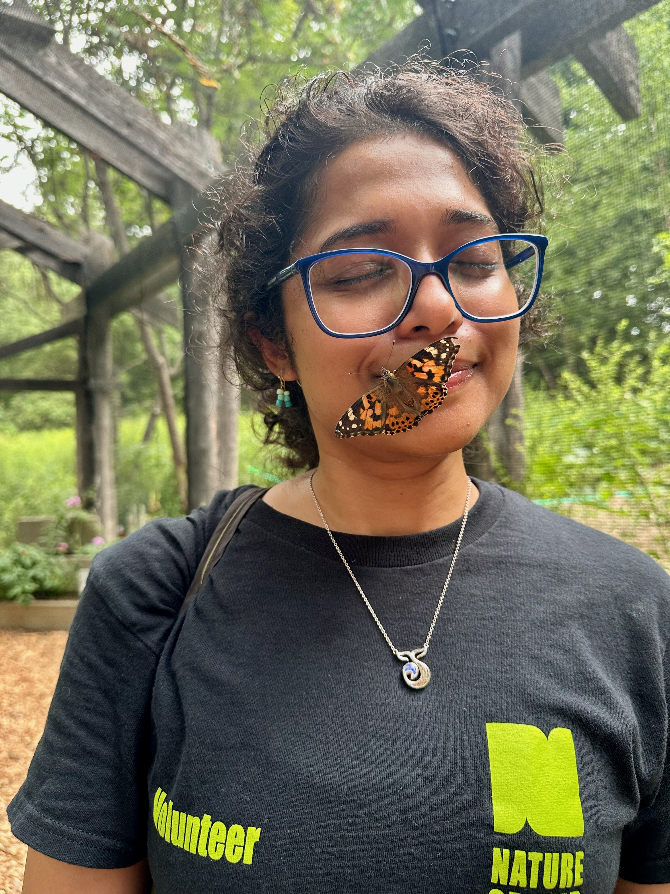
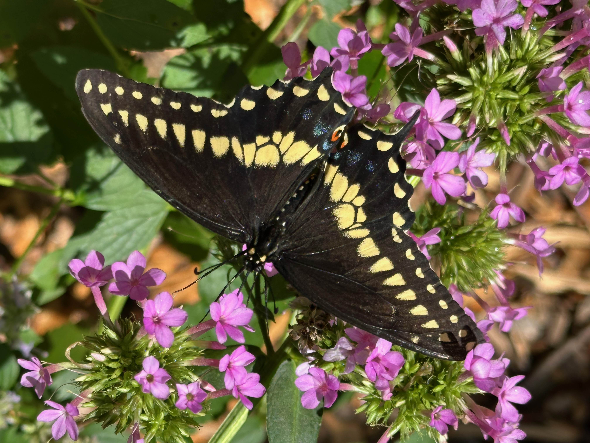
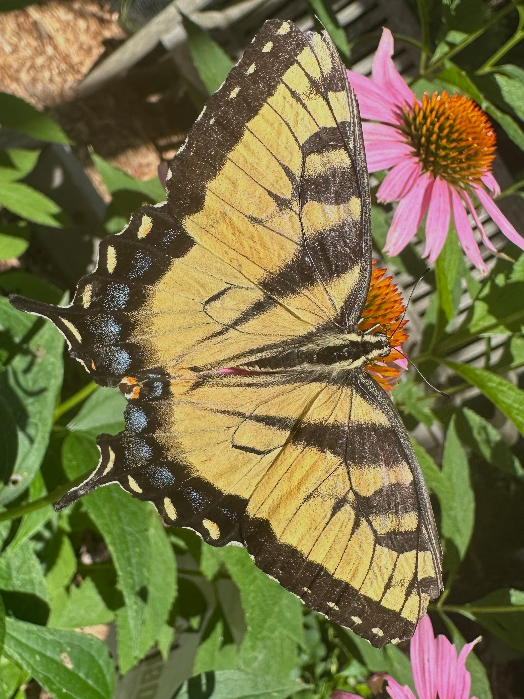
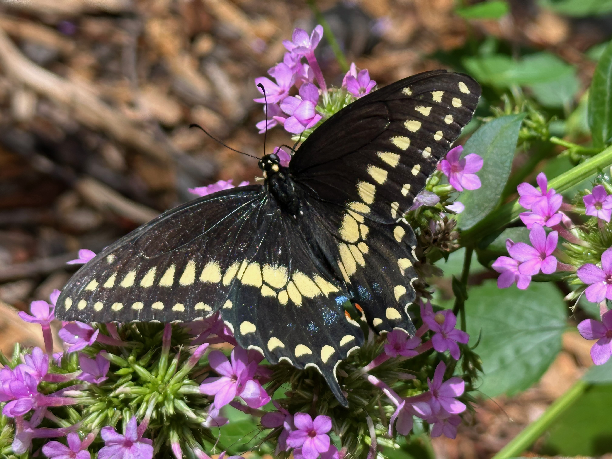
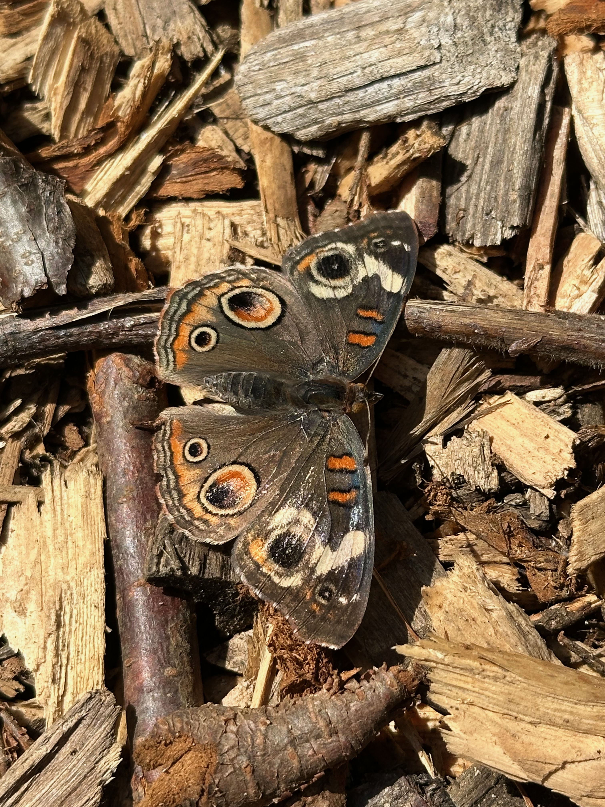
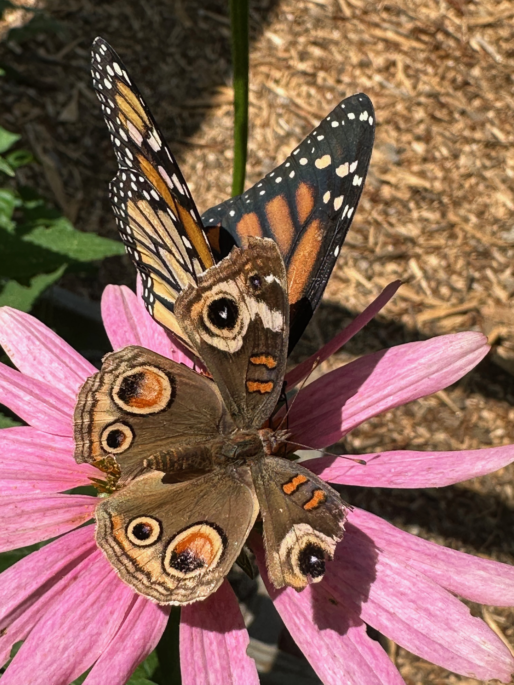
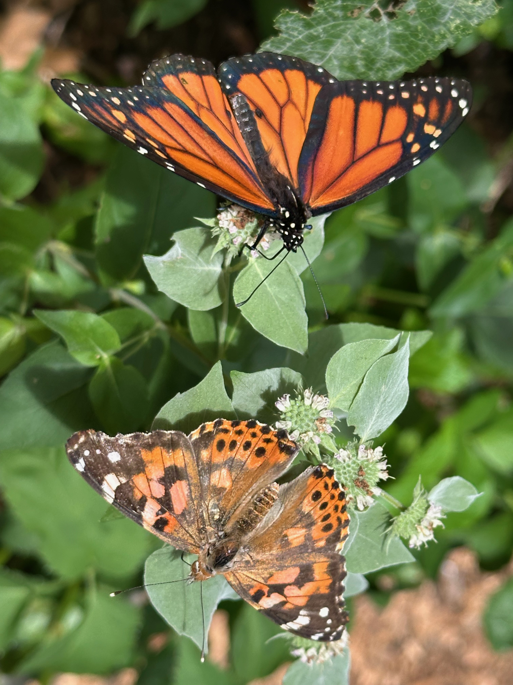
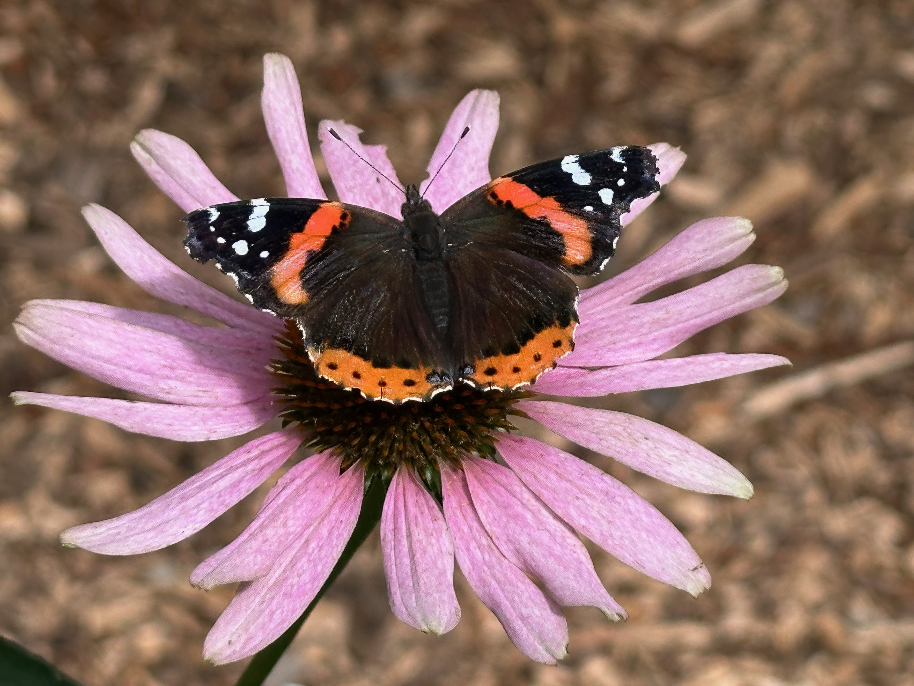
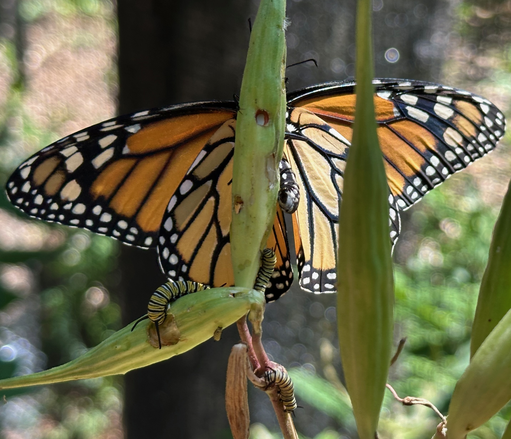

My love for the natural world has been my main motivation to volunteer for various conservation and outreach programmes. I have focused on doing hands-on work in the field and community engagement. Through my training and roles at a local nature centre and New York City (NYC) Parks, I am gaining the necessary practical experience and knowledge to move from an observer to an active participant.
The following sections detail my work in public education and habitat monitoring, through which I continue to develop my skills in conservation.

A Painted Lady resting on me!
Led guided tours through meadow and into the butterfly conservatory, educating visitors about different species of butterflies in New York and their life cycles. Discussed the importance of biodiversity, native plants and pollinators, providing visitors with a unique and engaging experience as butterflies frequently landed on them during the tours.
A curated selection of native species and pollinators encountered during fieldwork and conservatory programmes.







